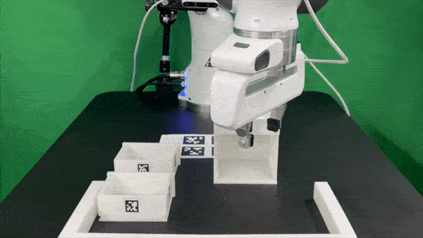
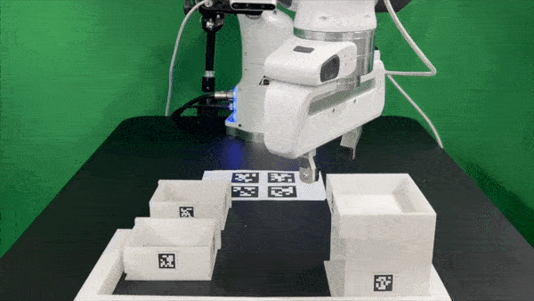
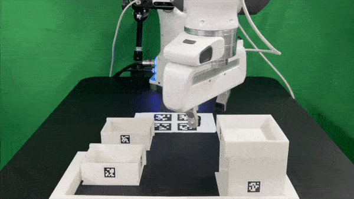
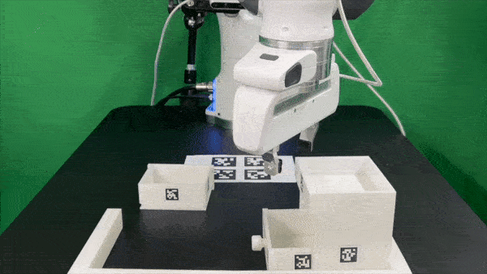
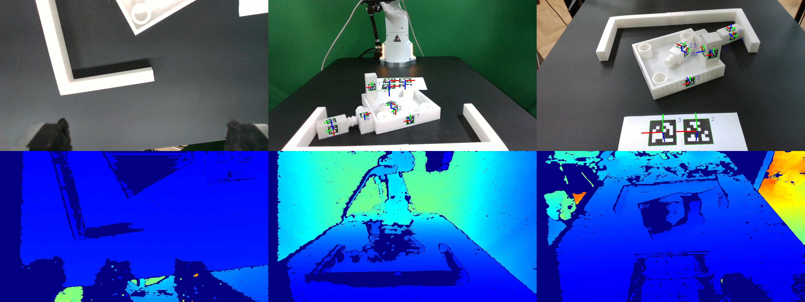

How to Use FurnitureBench
Contents
How to Use FurnitureBench#
FurnitureBench Configuration#
FurnitureBench can be configured with the following arguments:
import gym
import furniture_bench
env = gym.make(
'Furniture-Env-v0',
furniture=..., # Specifies the name of furniture [lamp | square_table | desk | drawer | cabinet | round_table | stool | chair | one_leg].
resize_img=True, # If true, images are resized to 224 x 224.
manual_done=False, # If true, the episode ends only when the user presses the 'done' button.
with_display=True, # If true, camera inputs are rendered on environment steps.
draw_marker=False, # If true and with_display is also true, the AprilTag marker is rendered on display.
manual_label=False, # If true, manual labeling of the reward is allowed.
from_skill=0, # Skill index to start from (range: [0-5)). Index `i` denotes the completion of ith skill and commencement of the (i + 1)th skill.
to_skill=-1, # Skill index to end at (range: [1-5]). Should be larger than `from_skill`. Default -1 expects the full task from `from_skill` onwards.
randomness='low', # Level of randomness in the environment [low | med | high].
high_random_idx=-1, # Index of the high randomness level (range: [0-2]). Default -1 will randomly select the index within the range.
visualize_init_pose=True, # If true, the initial pose of furniture parts is visualized.
record=False, # If true, the video of the agent's observation is recorded.
manual_reset=True # If true, a manual reset of the environment is allowed.
)
Parameters#
randomnesscontrols the randomness level of the environment.
The end-effector pose is also perturbed depending on the randomness level.
For the
medandhigh, the end-effector pose is perturbed from the pre-defined target pose with noise (±5 cm positional, ±15◦ rotational).For the
lowof the full assembly task, the end-effector pose is fixed to the pre-defined target pose.For the
lowof the skill benchmark, the noise is applied to the pre-defined target pose (±0.5 cm positional, ±5◦ rotational).
from_skillandto_skillcontrol the skill range of the environment.
During initialization, you should match the initial pose of the furniture with the pre-defined pose using a GUI tool (see Start Teleoperation list item 3). And then, the script will move the end-effector to the pre-defined pose (plus with noise depending on randomness level) for each skill. Below are the initialization processes of the script when
from_skillis set at 1 to 4, from left to right.
 |
 |
 |
 |
|---|---|---|---|
Utilities#
The following sections explain the utilities of FurnitureBench.
Visualize Camera Inputs#
This script allows you to visualize AprilTag detection and the camera from three different views (front, wrist, and rear):
{kind=link}
python furniture_bench/scripts/run_cam_april.py
Visualize Robot Trajectory#
This script will show robot’s trajectory saved in a .pkl file.
The wrist and front camera views are shown in the left and right panels, respectively.
If you want to try out with the pre-recorded trajectories, you can download the .pkl files from Download Dataset.
We run the following commands with cabinet trajectory.
python furniture_bench/scripts/show_trajectory.py --data-path 00149.pkl
{kind=link}
Camera Calibration#
Our demonstration consists of randomly perturbed front camera poses in each episode. To determine the camera pose from the front-view image, we calculate the average camera pose for each type of furniture.
Run the following commands to calibrate the front camera pose for each furniture type.
python furniture_bench/scripts/calibration.py --target <furniture>

The image displays the deviation of the camera pose from the target pose. The green/red text shows if the camera pose is within the threshold or not.#